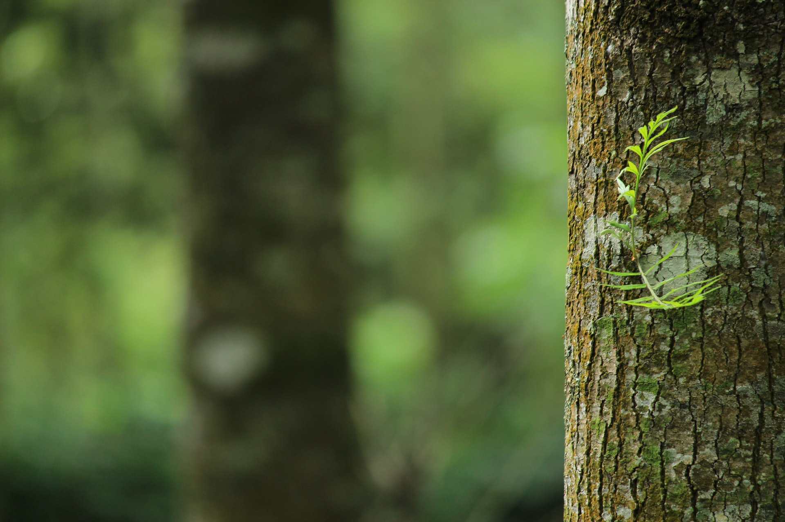

A definição comum de floresta é qualquer grande área de terra coberta de árvores ou outra vegetação que produza madeira, onde as copas se tocam formando um “teto” verde. Mata, mato, bosque, capoeira e selva são alguns dos nomes populares dados à floresta.
As principais características das florestas tropicais são: a presença de árvores altas, o clima quente e a elevada precipitação. A temperatura média atinge 20 ºC e chove cerca de 1.200 milímetros anuais. Apesar de suportar uma enorme variedade de plantas, os solos das florestas tropicais são pobres.


Muitas ordens e famílias botânicas têm árvores entre seus representantes, portanto as árvores têm grande variedade de formas de copa, folha, flor, fruto, estruturas reprodutivas, tipo de madeira, que são inclusive usados na identificação da espécie.